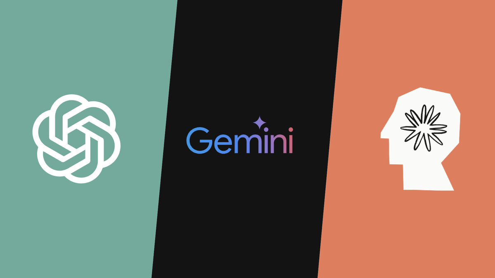
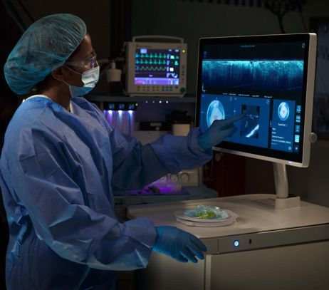
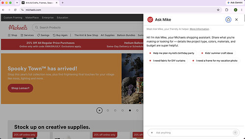

The Commercial AI Brief · August 2026
AI at Work
Smarter technology, safer healthcare, and easier shopping: recent developments show how artificial intelligence is creating practical business value.
How AI Is Changing Industries
Artificial intelligence is moving beyond the chatbot and into everyday business. Companies are now using AI to build better software, automate business tasks, support doctors, and help customers shop.
This newsletter looks at recent AI developments across three industries: technology, healthcare, and retail. Each industry shows a different way that AI is being used in the real world.
In technology, the focus is on more capable and affordable AI models, as well as AI agents that can complete business tasks. In healthcare, AI is being used to support surgeons during breast cancer surgery. In retail, conversational AI is helping customers find products based on what they want to create.
Together, these industries show three important areas of commercial AI:
- Technology provides the AI models and platforms that businesses can build on.
- Healthcare shows how AI can support high-stakes professional decisions.
- Retail shows how AI can improve everyday customer experiences.
The key question is no longer simply, “Can AI do it?” The more important question is, “Can AI do it reliably, affordably, and in a way that creates real value?”
From AI capability to business outcome
Industry 01 · Technology
From Better AI Models to Business AI Agents
The technology industry is moving in two connected directions: making AI models more capable and affordable, and giving AI the ability to complete real business tasks.

Gemini 3.7 Flash and Claude Opus 5
Recent releases from Google and Anthropic show that AI competition is no longer just about building the most powerful model. Companies are also competing on price, speed, and practical performance.
Anthropic released Claude Opus 5 on July 24, 2026. The model is designed for coding, professional work, and long-running AI agents. Anthropic priced it at $5 per million input tokens and $25 per million output tokens, the same price as its previous Opus 4.8 model, while reporting major improvements in performance (Anthropic, 2026).
Google followed on August 13 with Gemini 3.7 Flash. The model is designed for coding, software agents, web development, and other knowledge work. Google made it available through its Gemini API and enterprise AI products. Its introductory price is $0.75 per million input tokens and $3.75 per million output tokens, half the original price of Gemini 3.6 Flash (Google, 2026).
These models are not direct substitutes because they target different levels of performance and cost. However, they point to an important trend: businesses now have more choices when deciding how much AI capability they actually need.
For example, a company could use Claude Opus 5 for complex coding or analysis while using a lower-cost model such as Gemini 3.7 Flash for high-volume tasks. This could make AI more affordable for customer support, document processing, software development, and internal research.
OpenAI Presence: Turning AI Into Business Work
The next step is moving from AI that generates answers to AI that can actually complete business tasks.
On July 22, 2026, OpenAI introduced OpenAI Presence, an enterprise product designed to deploy AI agents in voice and chat interactions.
A traditional chatbot mainly answers questions. A Presence agent can do more. It can access company information, use internal systems, follow company policies, take approved actions, and transfer a case to a human when needed (OpenAI, 2026).
For example, a customer calling about an incorrect bill could have the agent verify the customer, check account information, explain the charge, make an approved correction, and record the result. If the situation is unusual or risky, the agent could transfer the case to an employee.
This changes customer service from a series of separate manual steps into one connected workflow.
The product also shows why AI agents require more controls than basic chatbots. An agent that can access business systems or change customer information needs clear limits, testing, evaluation, and escalation rules.
What comes next?
Together, these developments suggest that the future of enterprise AI may be less about finding one “best” model and more about choosing the right model and the right AI agent for each task.
A company may use a more powerful model for complex work and a less expensive model for high-volume tasks. AI agents can then connect these capabilities to real business workflows.
However, businesses also need to look beyond model prices. Accuracy, response time, human review, and the cost of correcting mistakes all affect the real cost of using AI.
Industry 02 · Healthcare
Claire Brings AI-Assisted Imaging Into the Operating Room
Healthcare is one of the most important areas for commercial AI because the technology can support decisions that directly affect patients.

On August 13, 2026, Perimeter Medical Imaging AI announced the first U.S. commercial deployment of its Claire OCT System at Intermountain Health's LDS Hospital and American Fork Hospital.
Claire combines optical coherence tomography (OCT) with an AI detection system. During breast cancer surgery, it highlights areas of removed tissue that may contain cancer cells (Perimeter Medical Imaging AI, Inc., 2026).
Why does it matter?
During breast-conserving surgery, surgeons need to remove cancer while keeping as much healthy tissue as possible. One challenge is determining whether cancer cells remain at the edge of the removed tissue.
Claire provides three-dimensional, cross-sectional images and highlights areas of concern while the patient is still in surgery. Surgeons can use this information along with standard medical methods when deciding whether more tissue should be removed.
The clinical results show both benefits and trade-offs. In the pivotal study, adding Claire to standard intraoperative assessment increased margin-level sensitivity from 48.7% to 61.5%. However, specificity decreased from 72.1% to 65.8% (U.S. Food and Drug Administration, 2026).
In simple terms, the system helped identify more potentially diseased margins, but it also produced more false-positive findings.
What comes next?
The commercial launch is an important step because Claire is moving from clinical testing into everyday hospital use.
The next question is whether the technology improves real patient outcomes. Hospitals will need to look at repeat surgery rates, surgery time, the amount of tissue removed, pathology results, patient experience, training time, and total cost of care.
If results remain positive across different hospitals and patient groups, AI-assisted imaging could become more common in breast cancer surgery and potentially other medical procedures.
Healthcare also shows why human oversight is especially important in AI. When an AI mistake can affect a patient's treatment, accuracy alone is not enough. Safe use also requires training, monitoring, careful workflow design, and continued evaluation.
Industry 03 · Retail
Michaels Turns Product Search Into Project Guidance
Retail AI is moving beyond the traditional search box by helping customers describe a project and discover the products needed to complete it.

On July 21, 2026, Michaels introduced Ask Mike, an AI shopping assistant built with Google Cloud's Gemini Enterprise for Customer Experience. It is available through Michaels' website and mobile apps.
Instead of asking customers to search for individual products, Ask Mike allows them to describe what they want to make or accomplish. A customer might ask, “I am planning a birthday party. What do I need?” or “I want to make curtains on a $100 budget.” The AI can then recommend products that fit the customer's project (The Michaels Companies, Inc., 2026).
Why does it matter?
Traditional e-commerce search works best when customers already know what they want. But craft projects, parties, and home projects often start with an idea rather than a product name.
Ask Mike changes the shopping process:
- The customer describes a goal.
- AI understands the project and preferences.
- AI connects the request to Michaels' product catalog.
- The customer receives recommendations that can lead directly to a purchase.
This can benefit both sides. Customers get help turning an idea into a shopping list, while Michaels gets a better understanding of what customers are trying to accomplish.
Michaels reported nearly 75,000 conversations after the assistant's initial May release, with more than 60% focused on product discovery (The Michaels Companies, Inc., 2026).
Michaels also told Modern Retail that Ask Mike users converted at more than twice the rate of traditional-search users, while 27% of interactions resulted in a product click or add-to-cart action (Liu, 2026).
These numbers are promising, but they should be viewed carefully. Customers who choose to use Ask Mike may already have stronger purchase intent, and Michaels has not released all of the details behind the comparison.
What comes next?
Ask Mike could eventually support project bundles, inventory-aware substitutions, and post-purchase instructions.
The biggest risk is trust. If the AI recommends the wrong product or provides incorrect information, customers may lose confidence in the tool.
For retail AI to create long-term value, recommendations need to be based on accurate product and inventory information. The system should also clearly separate verified product information from AI-generated suggestions.
The goal is not simply to make shopping more conversational. The goal is to help customers find the right products and complete their projects more easily.
The Big Picture
What These Three Industries Tell Us About Commercial AI
Looking across technology, healthcare, and retail, a clear pattern emerges: AI is becoming part of real business processes rather than remaining a stand-alone tool.
In technology, companies are making AI more affordable and giving AI agents the ability to complete business tasks. In healthcare, AI is being used as a decision-support tool in a high-stakes environment. In retail, AI is helping customers move from an idea to a purchase.
The three industries also highlight different measures of success.
- Technology Balance capability, cost, speed, and accuracy.
- Healthcare Support professional judgment while protecting patient safety.
- Retail Turn customer intent into accurate and useful recommendations.
Commercial AI is not valuable simply because the technology is impressive. It becomes valuable when it solves a real problem, fits into an existing workflow, creates more value than it costs, and can be used safely. The future of AI may therefore be less about asking “Which company has the smartest model?” and more about asking “Which companies can turn AI into reliable results?” As AI becomes part of more business and professional decisions, companies that combine useful technology with good data, clear measurements, and human oversight will be better positioned to turn AI into long-term business value.
References
Anthropic. (2026, July 24). Introducing Claude Opus 5. https://www.anthropic.com/news/claude-opus-5
Autio, C., Schwartz, R., Dunietz, J., Jain, S., Stanley, M., Tabassi, E., Hall, P., & Roberts, K. (2024). Artificial intelligence risk management framework: Generative artificial intelligence profile (NIST AI 600-1). National Institute of Standards and Technology. https://doi.org/10.6028/NIST.AI.600-1
Google. (2026, August 13). Introducing Gemini 3.7 Flash. https://blog.google/innovation-and-ai/models-and-research/gemini-models/introducing-gemini-3-7-flash/
Liu, I. (2026). Michaels sees initial success with Google-powered AI assistant. Modern Retail. https://www.modernretail.co/technology/michaels-says-google-powered-ai-assistant-doubles-conversion-rate-of-traditional-search/
Lukičić, M. (2024, June 21). Maximising LLM performance: Using Claude, GPT-4o, and Gemini together for the best results [Article cover image]. LinkedIn. https://www.linkedin.com/pulse/maximising-llm-performance-using-claude-gpt-4o-gemini-marko-lukičić-tccof
Mendes, A. (2026, March 6). The Claire OCT System represents an important regulatory milestone for Perimeter Medical Imaging AI [LinkedIn post]. LinkedIn. https://www.linkedin.com/posts/adrianmendes_the-claire-oct-system-represents-an-important-activity-7435685727574839296-dx-D
OpenAI. (2026, July 22). Introducing OpenAI Presence. https://openai.com/index/introducing-openai-presence/
Perimeter Medical Imaging AI, Inc. (2026, August 13). Intermountain Health brings Perimeter's Claire to the operating room, a landmark in breast cancer surgery using AI. PR Newswire. https://www.prnewswire.com/news-releases/intermountain-health-brings-perimeters-claire-to-the-operating-room-a-landmark-in-breast-cancer-surgery-using-ai-302850406.html
The Michaels Companies, Inc. (2026, July 21). Michaels unveils “Ask Mike” AI assistant, built with Google Cloud's Gemini Enterprise for Customer Experience. PR Newswire. https://www.prnewswire.com/news-releases/michaels-unveils-ask-mike-ai-assistant-built-with-google-clouds-gemini-enterprise-for-customer-experience-302830112.html
U.S. Food and Drug Administration. (2026, March 3). Claire OCT System—P250008. https://www.accessdata.fda.gov/scripts/cdrh/cfdocs/cfpma/pma.cfm?ID=P250008